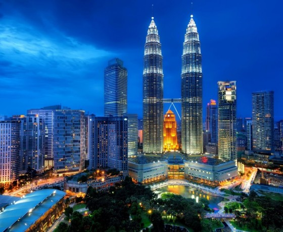
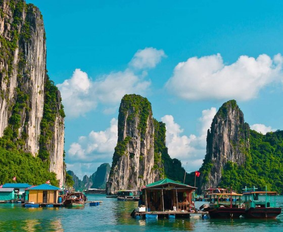

Happy trails Travel Agencies has long and prestigious history of 54 years of experience specializing in a range of high quality corporate travel and related services. We were established in February 1956 and was accredited as IATA Agent in April 1957. It is not a subsidiary of a parent company nor has it been merged or acquired by another company. Our Head Office is situated on Moi Avenue in the City Centre. We occupy two floors of the company-owned building.
We have two IATA accredited Branch Offices in Nairobi at Industrial Area and at Rahimtullah Trust Towers, Upper Hill. There are two other offices to provide back-up services: Jomo Kenyatta International Airport which is strategically situated in the arrival terminal and is open 24 hours a day throughout the week. The other office at Kileleshwa is operational after normal working hours during the week and full time over the weekends.
Both of these offices enable us to provide full travel agency services around the clock throughout the year. We have a total staff of 70 full time personnel in various fields of our operations. Our annual turnover in the region is KSHS18 million.
Having been in business for over 54 years now, our business model has evolved from that of bricks-and-motor to clicks-and-mortar. We have kept abreast of technological advancements in the travel trade and take pride in being in the forefront to introduce them in our business. We were the first agent in Kenya to be automated in making airline reservations and printing tickets. Our accounts have been computerized for over 30 years.
By choosing Acharya Travel Agencies as your travel agent, you have access to a wealth of expertise, personalized services and technological advancement that is not available to you through airlines, Internet booking sites or through most other travel agencies. You receive professional and ethical services in a total quality environment from the people who respond to the needs and expectations of their clients. Furthermore, we value your business and have an immaculate track record in the industry spanning over 50 years now.
